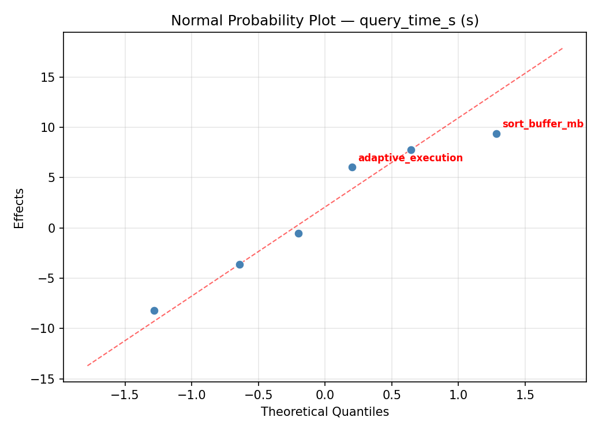
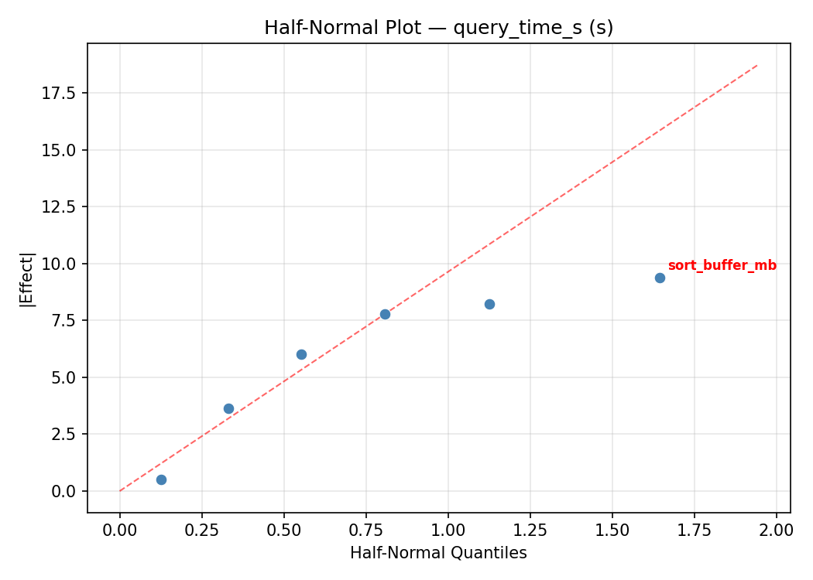
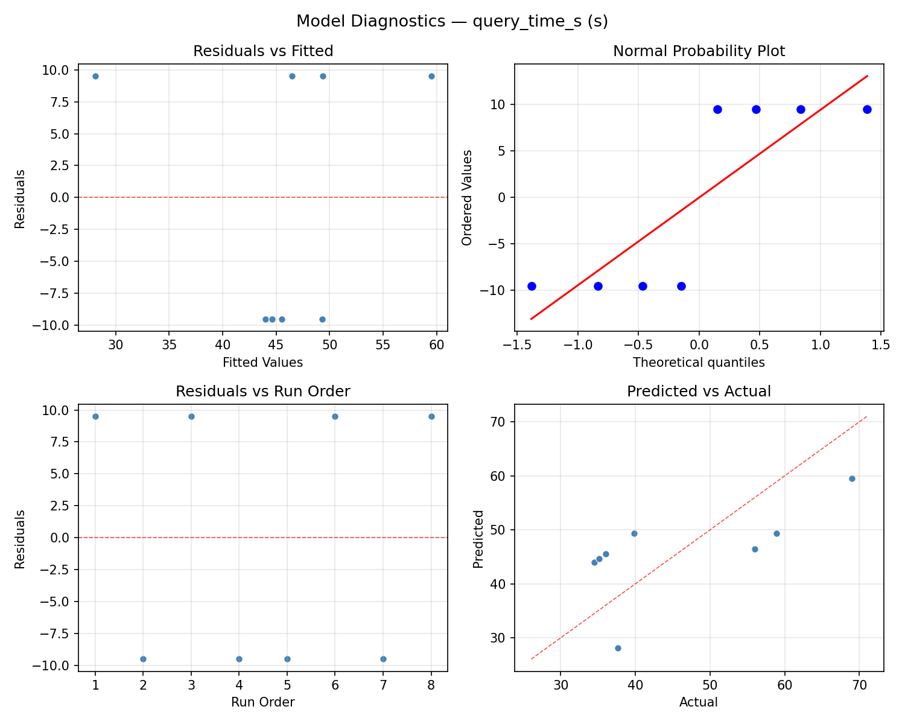
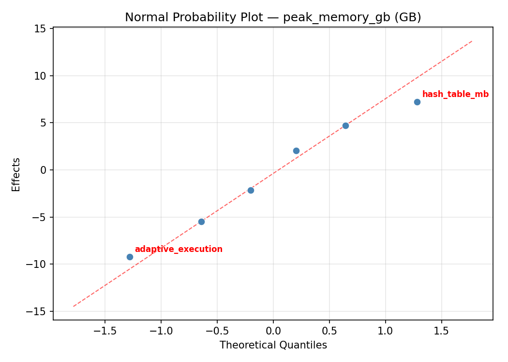
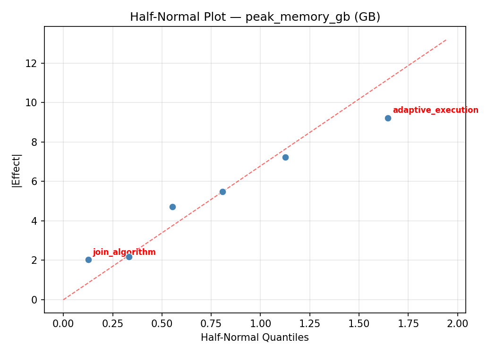
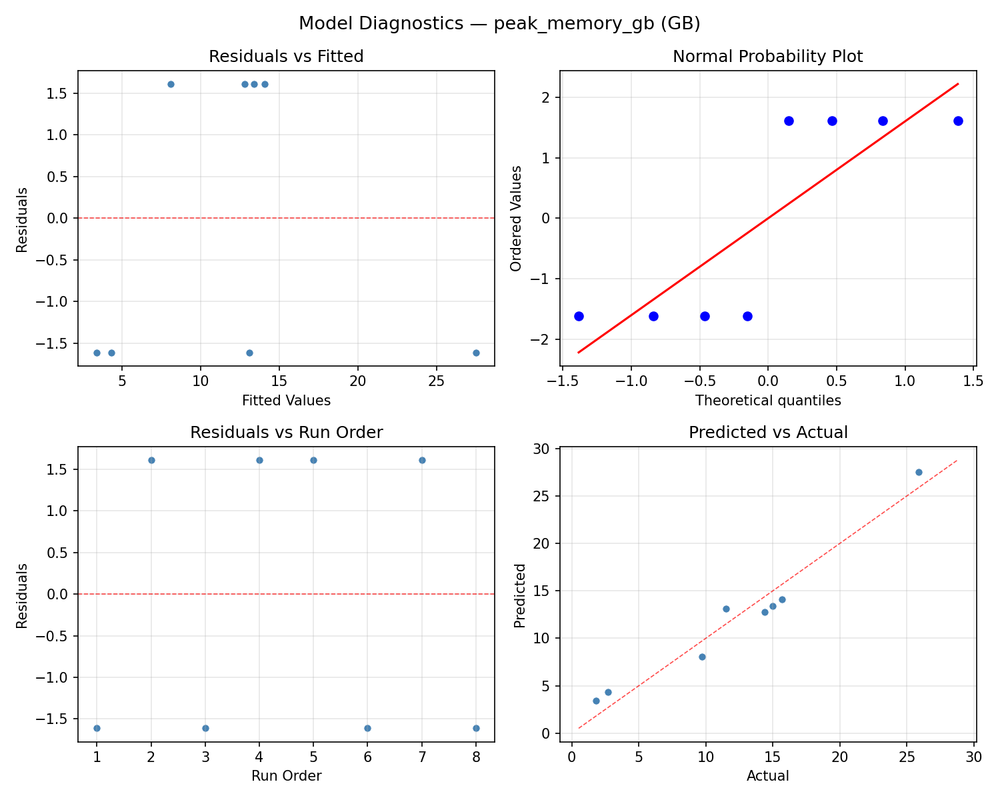

Summary
This experiment investigates query engine join strategy. Plackett-Burman screening of 6 query engine parameters for join performance and memory pressure.
The design varies 6 factors: join algorithm, ranging from hash to sort_merge, hash table mb (MB), ranging from 256 to 4096, sort buffer mb (MB), ranging from 64 to 512, broadcast threshold mb (MB), ranging from 10 to 256, adaptive execution, ranging from off to on, and partitions (count), ranging from 50 to 400. The goal is to optimize 2 responses: query time s (s) (minimize) and peak memory gb (GB) (minimize). Fixed conditions held constant across all runs include engine = spark_sql, data size gb = 100.
A Plackett-Burman screening design was used to efficiently test 6 factors in only 8 runs. This design assumes interactions are negligible and focuses on identifying the most influential main effects.
Key Findings
For query time s, the most influential factors were partitions (39.4%), hash table mb (17.7%), adaptive execution (13.9%). The best observed value was 34.5 (at join algorithm = sort_merge, hash table mb = 4096, sort buffer mb = 512).
For peak memory gb, the most influential factors were sort buffer mb (35.3%), partitions (33.2%), join algorithm (14.2%). The best observed value was 1.8 (at join algorithm = sort_merge, hash table mb = 256, sort buffer mb = 64).
Recommended Next Steps
- Follow up with a response surface design (CCD or Box-Behnken) on the top 3–4 factors to model curvature and find the true optimum.
- Consider whether any fixed factors should be varied in a future study.
- The screening results can guide factor reduction — drop factors contributing less than 5% and re-run with a smaller, more focused design.
Experimental Setup
Factors
| Factor | Low | High | Unit |
|---|
join_algorithm | hash | sort_merge | |
hash_table_mb | 256 | 4096 | MB |
sort_buffer_mb | 64 | 512 | MB |
broadcast_threshold_mb | 10 | 256 | MB |
adaptive_execution | off | on | |
partitions | 50 | 400 | count |
Fixed: engine = spark_sql, data_size_gb = 100
Responses
| Response | Direction | Unit |
|---|
query_time_s | ↓ minimize | s |
peak_memory_gb | ↓ minimize | GB |
Configuration
{
"metadata": {
"name": "Query Engine Join Strategy",
"description": "Plackett-Burman screening of 6 query engine parameters for join performance and memory pressure"
},
"factors": [
{
"name": "join_algorithm",
"levels": [
"hash",
"sort_merge"
],
"type": "categorical",
"unit": ""
},
{
"name": "hash_table_mb",
"levels": [
"256",
"4096"
],
"type": "continuous",
"unit": "MB"
},
{
"name": "sort_buffer_mb",
"levels": [
"64",
"512"
],
"type": "continuous",
"unit": "MB"
},
{
"name": "broadcast_threshold_mb",
"levels": [
"10",
"256"
],
"type": "continuous",
"unit": "MB"
},
{
"name": "adaptive_execution",
"levels": [
"off",
"on"
],
"type": "categorical",
"unit": ""
},
{
"name": "partitions",
"levels": [
"50",
"400"
],
"type": "continuous",
"unit": "count"
}
],
"fixed_factors": {
"engine": "spark_sql",
"data_size_gb": "100"
},
"responses": [
{
"name": "query_time_s",
"optimize": "minimize",
"unit": "s"
},
{
"name": "peak_memory_gb",
"optimize": "minimize",
"unit": "GB"
}
],
"settings": {
"operation": "plackett_burman",
"test_script": "use_cases/42_query_engine_join_strategy/sim.sh"
}
}
Experimental Matrix
The Plackett-Burman Design produces 8 runs. Each row is one experiment with specific factor settings.
| Run | join_algorithm | hash_table_mb | sort_buffer_mb | broadcast_threshold_mb | adaptive_execution | partitions |
|---|
| 1 | sort_merge | 4096 | 512 | 10 | off | 50 |
| 2 | hash | 256 | 512 | 256 | off | 50 |
| 3 | hash | 4096 | 64 | 256 | off | 400 |
| 4 | sort_merge | 4096 | 512 | 256 | on | 400 |
| 5 | hash | 4096 | 64 | 10 | on | 50 |
| 6 | sort_merge | 256 | 64 | 256 | on | 50 |
| 7 | hash | 256 | 512 | 10 | on | 400 |
| 8 | sort_merge | 256 | 64 | 10 | off | 400 |
Step-by-Step Workflow
1
Preview the design
$ python doe.py info --config use_cases/42_query_engine_join_strategy/config.json
2
Generate the runner script
$ python doe.py generate --config use_cases/42_query_engine_join_strategy/config.json \
--output use_cases/42_query_engine_join_strategy/results/run.sh --seed 42
3
Execute the experiments
$ bash use_cases/42_query_engine_join_strategy/results/run.sh
4
Analyze results
$ python doe.py analyze --config use_cases/42_query_engine_join_strategy/config.json
5
Get optimization recommendations
$ python doe.py optimize --config use_cases/42_query_engine_join_strategy/config.json
6
Multi-objective optimization
With 2 competing responses, use --multi to find the best compromise via Derringer–Suich desirability.
$ python doe.py optimize --config use_cases/42_query_engine_join_strategy/config.json --multi
7
Generate the HTML report
$ python doe.py report --config use_cases/42_query_engine_join_strategy/config.json \
--output use_cases/42_query_engine_join_strategy/results/report.html
Features Exercised
| Feature | Value |
|---|
| Design type | plackett_burman |
| Factor types | continuous (4), categorical (2) |
| Arg style | double-dash |
| Responses | 2 (query_time_s ↓, peak_memory_gb ↓) |
| Total runs | 8 |
Analysis Results
Generated from actual experiment runs using the DOE Helper Tool.
Response: query_time_s
Top factors: partitions (39.4%), hash_table_mb (17.7%), adaptive_execution (13.9%).
ANOVA
| Source | DF | SS | MS | F | p-value |
|---|
| Source | DF | SS | MS | F | p-value |
| join_algorithm | 1 | 6.3012 | 6.3012 | 0.049 | 0.8311 |
| hash_table_mb | 1 | 162.9012 | 162.9012 | 1.268 | 0.2973 |
| sort_buffer_mb | 1 | 72.6012 | 72.6012 | 0.565 | 0.4767 |
| broadcast_threshold_mb | 1 | 98.7012 | 98.7012 | 0.768 | 0.4098 |
| adaptive_execution | 1 | 101.5312 | 101.5312 | 0.790 | 0.4035 |
| partitions | 1 | 810.0312 | 810.0312 | 6.305 | 0.0403 |
| join_algorithm*hash_table_mb | 1 | 72.6012 | 72.6012 | 0.565 | 0.4767 |
| join_algorithm*sort_buffer_mb | 1 | 162.9012 | 162.9012 | 1.268 | 0.2973 |
| join_algorithm*broadcast_threshold_mb | 1 | 101.5313 | 101.5313 | 0.790 | 0.4035 |
| join_algorithm*adaptive_execution | 1 | 98.7012 | 98.7012 | 0.768 | 0.4098 |
| join_algorithm*partitions | 1 | 3.2513 | 3.2513 | 0.025 | 0.8781 |
| hash_table_mb*sort_buffer_mb | 1 | 6.3013 | 6.3013 | 0.049 | 0.8311 |
| hash_table_mb*broadcast_threshold_mb | 1 | 810.0313 | 810.0313 | 6.305 | 0.0403 |
| hash_table_mb*adaptive_execution | 1 | 3.2513 | 3.2513 | 0.025 | 0.8781 |
| hash_table_mb*partitions | 1 | 98.7013 | 98.7013 | 0.768 | 0.4098 |
| sort_buffer_mb*broadcast_threshold_mb | 1 | 3.2512 | 3.2512 | 0.025 | 0.8781 |
| sort_buffer_mb*adaptive_execution | 1 | 810.0312 | 810.0312 | 6.305 | 0.0403 |
| sort_buffer_mb*partitions | 1 | 101.5312 | 101.5312 | 0.790 | 0.4035 |
| broadcast_threshold_mb*adaptive_execution | 1 | 6.3013 | 6.3013 | 0.049 | 0.8311 |
| broadcast_threshold_mb*partitions | 1 | 162.9013 | 162.9013 | 1.268 | 0.2973 |
| adaptive_execution*partitions | 1 | 72.6012 | 72.6012 | 0.565 | 0.4767 |
| Error | (Lenth | PSE) | 7 | 899.3381 | 128.4769 |
| Total | 7 | 1255.3187 | 179.3312 | | |
Pareto Chart

Main Effects Plot

Normal Probability Plot of Effects

Half-Normal Plot of Effects

Model Diagnostics

Response: peak_memory_gb
Top factors: sort_buffer_mb (35.3%), partitions (33.2%), join_algorithm (14.2%).
ANOVA
| Source | DF | SS | MS | F | p-value |
|---|
| Source | DF | SS | MS | F | p-value |
| join_algorithm | 1 | 27.7512 | 27.7512 | 1.510 | 0.2588 |
| hash_table_mb | 1 | 0.1513 | 0.1513 | 0.008 | 0.9303 |
| sort_buffer_mb | 1 | 170.2012 | 170.2012 | 9.262 | 0.0188 |
| broadcast_threshold_mb | 1 | 12.2512 | 12.2512 | 0.667 | 0.4411 |
| adaptive_execution | 1 | 6.3013 | 6.3013 | 0.343 | 0.5765 |
| partitions | 1 | 150.5113 | 150.5113 | 8.190 | 0.0243 |
| join_algorithm*hash_table_mb | 1 | 170.2012 | 170.2012 | 9.262 | 0.0188 |
| join_algorithm*sort_buffer_mb | 1 | 0.1513 | 0.1513 | 0.008 | 0.9303 |
| join_algorithm*broadcast_threshold_mb | 1 | 6.3013 | 6.3013 | 0.343 | 0.5765 |
| join_algorithm*adaptive_execution | 1 | 12.2512 | 12.2512 | 0.667 | 0.4411 |
| join_algorithm*partitions | 1 | 50.5012 | 50.5012 | 2.748 | 0.1413 |
| hash_table_mb*sort_buffer_mb | 1 | 27.7512 | 27.7512 | 1.510 | 0.2588 |
| hash_table_mb*broadcast_threshold_mb | 1 | 150.5112 | 150.5112 | 8.190 | 0.0243 |
| hash_table_mb*adaptive_execution | 1 | 50.5012 | 50.5012 | 2.748 | 0.1413 |
| hash_table_mb*partitions | 1 | 12.2512 | 12.2512 | 0.667 | 0.4411 |
| sort_buffer_mb*broadcast_threshold_mb | 1 | 50.5012 | 50.5012 | 2.748 | 0.1413 |
| sort_buffer_mb*adaptive_execution | 1 | 150.5112 | 150.5112 | 8.190 | 0.0243 |
| sort_buffer_mb*partitions | 1 | 6.3012 | 6.3012 | 0.343 | 0.5765 |
| broadcast_threshold_mb*adaptive_execution | 1 | 27.7512 | 27.7512 | 1.510 | 0.2588 |
| broadcast_threshold_mb*partitions | 1 | 0.1512 | 0.1512 | 0.008 | 0.9303 |
| adaptive_execution*partitions | 1 | 170.2012 | 170.2012 | 9.262 | 0.0188 |
| Error | (Lenth | PSE) | 7 | 128.6381 | 18.3769 |
| Total | 7 | 417.6687 | 59.6670 | | |
Pareto Chart

Main Effects Plot

Normal Probability Plot of Effects

Half-Normal Plot of Effects

Model Diagnostics

Response Surface Plots
3D surfaces fitted with quadratic RSM. Red dots are observed data points.
peak memory gb broadcast threshold mb vs partitions

peak memory gb hash table mb vs broadcast threshold mb

peak memory gb hash table mb vs partitions

peak memory gb hash table mb vs sort buffer mb

peak memory gb sort buffer mb vs broadcast threshold mb

peak memory gb sort buffer mb vs partitions

query time s broadcast threshold mb vs partitions

query time s hash table mb vs broadcast threshold mb

query time s hash table mb vs partitions

query time s hash table mb vs sort buffer mb

query time s sort buffer mb vs broadcast threshold mb

query time s sort buffer mb vs partitions

Multi-Objective Optimization
When responses compete, Derringer–Suich desirability finds the best compromise.
Each response is scaled to a 0–1 desirability, then combined via a weighted geometric mean.
Overall Desirability
D = 0.8408
Per-Response Desirability
| Response | Weight | Desirability | Predicted | Dir |
|---|
query_time_s |
1.5 |
|
31.15 1.0000 31.15 s |
↓ |
peak_memory_gb |
1.0 |
|
9.92 0.6482 9.92 GB |
↓ |
Recommended Settings
| Factor | Value |
|---|
join_algorithm | sort_merge |
hash_table_mb | 4065 MB |
sort_buffer_mb | 73.95 MB |
broadcast_threshold_mb | 50.15 MB |
adaptive_execution | on |
partitions | 60.19 count |
Source: from RSM model prediction
Trade-off Summary
Sacrifice = how much worse than single-objective best.
| Response | Predicted | Best Observed | Sacrifice |
|---|
peak_memory_gb | 9.92 | 1.80 | +8.12 |
Top 3 Runs by Desirability
| Run | D | Factor Settings |
|---|
| #5 | 0.7174 | join_algorithm=sort_merge, hash_table_mb=4096, sort_buffer_mb=512, broadcast_threshold_mb=10, adaptive_execution=off, partitions=50 |
| #4 | 0.6940 | join_algorithm=sort_merge, hash_table_mb=256, sort_buffer_mb=64, broadcast_threshold_mb=10, adaptive_execution=off, partitions=400 |
Model Quality
| Response | R² | Type |
|---|
peak_memory_gb | 0.9547 | linear |
Full Multi-Objective Output
============================================================
MULTI-OBJECTIVE OPTIMIZATION
Method: Derringer-Suich Desirability Function
============================================================
Overall desirability: D = 0.8408
Response Weight Desirability Predicted Direction
---------------------------------------------------------------------
query_time_s 1.5 1.0000 31.15 s ↓
peak_memory_gb 1.0 0.6482 9.92 GB ↓
Recommended settings:
join_algorithm = sort_merge
hash_table_mb = 4065 MB
sort_buffer_mb = 73.95 MB
broadcast_threshold_mb = 50.15 MB
adaptive_execution = on
partitions = 60.19 count
(from RSM model prediction)
Trade-off summary:
query_time_s: 31.15 (best observed: 34.50, sacrifice: -3.35)
peak_memory_gb: 9.92 (best observed: 1.80, sacrifice: +8.12)
Model quality:
query_time_s: R² = 0.9931 (linear)
peak_memory_gb: R² = 0.9547 (linear)
Top 3 observed runs by overall desirability:
1. Run #7 (D=0.8012): join_algorithm=hash, hash_table_mb=4096, sort_buffer_mb=64, broadcast_threshold_mb=10, adaptive_execution=on, partitions=50
2. Run #5 (D=0.7174): join_algorithm=sort_merge, hash_table_mb=4096, sort_buffer_mb=512, broadcast_threshold_mb=10, adaptive_execution=off, partitions=50
3. Run #4 (D=0.6940): join_algorithm=sort_merge, hash_table_mb=256, sort_buffer_mb=64, broadcast_threshold_mb=10, adaptive_execution=off, partitions=400
Full Analysis Output
=== Main Effects: query_time_s ===
Factor Effect Std Error % Contribution
--------------------------------------------------------------
partitions -20.1250 4.7346 39.4%
hash_table_mb 9.0250 4.7346 17.7%
adaptive_execution -7.1250 4.7346 13.9%
broadcast_threshold_mb 7.0250 4.7346 13.7%
sort_buffer_mb 6.0250 4.7346 11.8%
join_algorithm 1.7750 4.7346 3.5%
=== ANOVA Table: query_time_s ===
Source DF SS MS F p-value
-----------------------------------------------------------------------------
join_algorithm 1 6.3012 6.3012 0.049 0.8311
hash_table_mb 1 162.9012 162.9012 1.268 0.2973
sort_buffer_mb 1 72.6012 72.6012 0.565 0.4767
broadcast_threshold_mb 1 98.7012 98.7012 0.768 0.4098
adaptive_execution 1 101.5312 101.5312 0.790 0.4035
partitions 1 810.0312 810.0312 6.305 0.0403
join_algorithm*hash_table_mb 1 72.6012 72.6012 0.565 0.4767
join_algorithm*sort_buffer_mb 1 162.9012 162.9012 1.268 0.2973
join_algorithm*broadcast_threshold_mb 1 101.5313 101.5313 0.790 0.4035
join_algorithm*adaptive_execution 1 98.7012 98.7012 0.768 0.4098
join_algorithm*partitions 1 3.2513 3.2513 0.025 0.8781
hash_table_mb*sort_buffer_mb 1 6.3013 6.3013 0.049 0.8311
hash_table_mb*broadcast_threshold_mb 1 810.0313 810.0313 6.305 0.0403
hash_table_mb*adaptive_execution 1 3.2513 3.2513 0.025 0.8781
hash_table_mb*partitions 1 98.7013 98.7013 0.768 0.4098
sort_buffer_mb*broadcast_threshold_mb 1 3.2512 3.2512 0.025 0.8781
sort_buffer_mb*adaptive_execution 1 810.0312 810.0312 6.305 0.0403
sort_buffer_mb*partitions 1 101.5312 101.5312 0.790 0.4035
broadcast_threshold_mb*adaptive_execution 1 6.3013 6.3013 0.049 0.8311
broadcast_threshold_mb*partitions 1 162.9013 162.9013 1.268 0.2973
adaptive_execution*partitions 1 72.6012 72.6012 0.565 0.4767
Error (Lenth PSE) 7 899.3381 128.4769
Total 7 1255.3187 179.3312
Note: Error estimated using Lenth's pseudo-standard-error (unreplicated design)
=== Interaction Effects: query_time_s ===
Factor A Factor B Interaction % Contribution
------------------------------------------------------------------------
hash_table_mb broadcast_threshold_mb 20.1250 19.0%
sort_buffer_mb adaptive_execution -20.1250 19.0%
join_algorithm sort_buffer_mb -9.0250 8.5%
broadcast_threshold_mb partitions -9.0250 8.5%
join_algorithm broadcast_threshold_mb -7.1250 6.7%
sort_buffer_mb partitions -7.1250 6.7%
join_algorithm adaptive_execution 7.0250 6.6%
hash_table_mb partitions -7.0250 6.6%
join_algorithm hash_table_mb -6.0250 5.7%
adaptive_execution partitions 6.0250 5.7%
hash_table_mb sort_buffer_mb -1.7750 1.7%
broadcast_threshold_mb adaptive_execution 1.7750 1.7%
join_algorithm partitions -1.2750 1.2%
hash_table_mb adaptive_execution 1.2750 1.2%
sort_buffer_mb broadcast_threshold_mb -1.2750 1.2%
=== Summary Statistics: query_time_s ===
join_algorithm:
Level N Mean Std Min Max
------------------------------------------------------------
hash 4 44.9750 16.1457 35.1000 69.0000
sort_merge 4 46.7500 12.4762 34.5000 58.9000
hash_table_mb:
Level N Mean Std Min Max
------------------------------------------------------------
256 4 41.3500 10.0500 34.5000 56.0000
4096 4 50.3750 16.2215 36.0000 69.0000
sort_buffer_mb:
Level N Mean Std Min Max
------------------------------------------------------------
512 4 42.8500 10.8709 35.1000 58.9000
64 4 48.8750 16.6151 34.5000 69.0000
broadcast_threshold_mb:
Level N Mean Std Min Max
------------------------------------------------------------
10 4 42.3500 9.2324 36.0000 56.0000
256 4 49.3750 17.3292 34.5000 69.0000
adaptive_execution:
Level N Mean Std Min Max
------------------------------------------------------------
off 4 49.4250 16.0359 35.1000 69.0000
on 4 42.3000 11.2892 34.5000 58.9000
partitions:
Level N Mean Std Min Max
------------------------------------------------------------
400 4 55.9250 12.1082 39.8000 69.0000
50 4 35.8000 1.3491 34.5000 37.6000
=== Main Effects: peak_memory_gb ===
Factor Effect Std Error % Contribution
--------------------------------------------------------------
sort_buffer_mb -9.2250 2.7310 35.3%
partitions 8.6750 2.7310 33.2%
join_algorithm 3.7250 2.7310 14.2%
broadcast_threshold_mb -2.4750 2.7310 9.5%
adaptive_execution 1.7750 2.7310 6.8%
hash_table_mb 0.2750 2.7310 1.1%
=== ANOVA Table: peak_memory_gb ===
Source DF SS MS F p-value
-----------------------------------------------------------------------------
join_algorithm 1 27.7512 27.7512 1.510 0.2588
hash_table_mb 1 0.1513 0.1513 0.008 0.9303
sort_buffer_mb 1 170.2012 170.2012 9.262 0.0188
broadcast_threshold_mb 1 12.2512 12.2512 0.667 0.4411
adaptive_execution 1 6.3013 6.3013 0.343 0.5765
partitions 1 150.5113 150.5113 8.190 0.0243
join_algorithm*hash_table_mb 1 170.2012 170.2012 9.262 0.0188
join_algorithm*sort_buffer_mb 1 0.1513 0.1513 0.008 0.9303
join_algorithm*broadcast_threshold_mb 1 6.3013 6.3013 0.343 0.5765
join_algorithm*adaptive_execution 1 12.2512 12.2512 0.667 0.4411
join_algorithm*partitions 1 50.5012 50.5012 2.748 0.1413
hash_table_mb*sort_buffer_mb 1 27.7512 27.7512 1.510 0.2588
hash_table_mb*broadcast_threshold_mb 1 150.5112 150.5112 8.190 0.0243
hash_table_mb*adaptive_execution 1 50.5012 50.5012 2.748 0.1413
hash_table_mb*partitions 1 12.2512 12.2512 0.667 0.4411
sort_buffer_mb*broadcast_threshold_mb 1 50.5012 50.5012 2.748 0.1413
sort_buffer_mb*adaptive_execution 1 150.5112 150.5112 8.190 0.0243
sort_buffer_mb*partitions 1 6.3012 6.3012 0.343 0.5765
broadcast_threshold_mb*adaptive_execution 1 27.7512 27.7512 1.510 0.2588
broadcast_threshold_mb*partitions 1 0.1512 0.1512 0.008 0.9303
adaptive_execution*partitions 1 170.2012 170.2012 9.262 0.0188
Error (Lenth PSE) 7 128.6381 18.3769
Total 7 417.6687 59.6670
Note: Error estimated using Lenth's pseudo-standard-error (unreplicated design)
=== Interaction Effects: peak_memory_gb ===
Factor A Factor B Interaction % Contribution
------------------------------------------------------------------------
join_algorithm hash_table_mb 9.2250 13.7%
adaptive_execution partitions -9.2250 13.7%
hash_table_mb broadcast_threshold_mb -8.6750 12.9%
sort_buffer_mb adaptive_execution 8.6750 12.9%
join_algorithm partitions 5.0250 7.5%
hash_table_mb adaptive_execution -5.0250 7.5%
sort_buffer_mb broadcast_threshold_mb 5.0250 7.5%
hash_table_mb sort_buffer_mb -3.7250 5.5%
broadcast_threshold_mb adaptive_execution 3.7250 5.5%
join_algorithm adaptive_execution -2.4750 3.7%
hash_table_mb partitions 2.4750 3.7%
join_algorithm broadcast_threshold_mb 1.7750 2.6%
sort_buffer_mb partitions 1.7750 2.6%
join_algorithm sort_buffer_mb -0.2750 0.4%
broadcast_threshold_mb partitions -0.2750 0.4%
=== Summary Statistics: peak_memory_gb ===
join_algorithm:
Level N Mean Std Min Max
------------------------------------------------------------
hash 4 10.2250 6.0961 1.8000 15.0000
sort_merge 4 13.9500 9.6338 2.7000 25.9000
hash_table_mb:
Level N Mean Std Min Max
------------------------------------------------------------
256 4 11.9500 6.1895 2.7000 15.7000
4096 4 12.2250 10.0430 1.8000 25.9000
sort_buffer_mb:
Level N Mean Std Min Max
------------------------------------------------------------
512 4 16.7000 6.3209 11.5000 25.9000
64 4 7.4750 6.5220 1.8000 15.7000
broadcast_threshold_mb:
Level N Mean Std Min Max
------------------------------------------------------------
10 4 13.3250 9.7804 2.7000 25.9000
256 4 10.8500 6.2836 1.8000 15.7000
adaptive_execution:
Level N Mean Std Min Max
------------------------------------------------------------
off 4 11.2000 11.3569 1.8000 25.9000
on 4 12.9750 2.8535 9.7000 15.7000
partitions:
Level N Mean Std Min Max
------------------------------------------------------------
400 4 7.7500 6.5200 1.8000 15.0000
50 4 16.4250 6.8222 9.7000 25.9000
Optimization Recommendations
=== Optimization: query_time_s ===
Direction: minimize
Best observed run: #4
join_algorithm = sort_merge
hash_table_mb = 4096
sort_buffer_mb = 512
broadcast_threshold_mb = 10
adaptive_execution = off
partitions = 50
Value: 34.5
RSM Model (linear, R² = 0.9422, Adj R² = 0.5952):
Coefficients:
intercept +45.8625
join_algorithm -1.8125
hash_table_mb -4.1125
sort_buffer_mb -3.8875
broadcast_threshold_mb -0.2625
adaptive_execution +9.5125
partitions -4.6875
Predicted optimum (from linear model, at observed points):
join_algorithm = sort_merge
hash_table_mb = 256
sort_buffer_mb = 64
broadcast_threshold_mb = 256
adaptive_execution = on
partitions = 50
Predicted value: 65.9875
Surface optimum (via L-BFGS-B, linear model):
join_algorithm = sort_merge
hash_table_mb = 4096
sort_buffer_mb = 512
broadcast_threshold_mb = 256
adaptive_execution = off
partitions = 400
Predicted value: 21.5875
Model quality: Excellent fit — surface predictions are reliable.
Factor importance:
1. adaptive_execution (effect: 19.0, contribution: 39.2%)
2. partitions (effect: 9.4, contribution: 19.3%)
3. hash_table_mb (effect: -8.2, contribution: 16.9%)
4. sort_buffer_mb (effect: 7.8, contribution: 16.0%)
5. join_algorithm (effect: -3.6, contribution: 7.5%)
6. broadcast_threshold_mb (effect: -0.5, contribution: 1.1%)
=== Optimization: peak_memory_gb ===
Direction: minimize
Best observed run: #8
join_algorithm = sort_merge
hash_table_mb = 256
sort_buffer_mb = 64
broadcast_threshold_mb = 256
adaptive_execution = on
partitions = 50
Value: 1.8
RSM Model (linear, R² = 0.5925, Adj R² = -1.8525):
Coefficients:
intercept +12.0875
join_algorithm +2.3625
hash_table_mb +3.6125
sort_buffer_mb +2.7375
broadcast_threshold_mb +1.0125
adaptive_execution -1.6125
partitions +1.0875
Predicted optimum (from linear model, at observed points):
join_algorithm = sort_merge
hash_table_mb = 4096
sort_buffer_mb = 512
broadcast_threshold_mb = 256
adaptive_execution = on
partitions = 400
Predicted value: 21.2875
Surface optimum (via L-BFGS-B, linear model):
join_algorithm = hash
hash_table_mb = 256
sort_buffer_mb = 64
broadcast_threshold_mb = 10
adaptive_execution = on
partitions = 50
Predicted value: -0.3375
Model quality: Moderate fit — use predictions directionally, not precisely.
Factor importance:
1. hash_table_mb (effect: 7.2, contribution: 29.1%)
2. sort_buffer_mb (effect: -5.5, contribution: 22.0%)
3. join_algorithm (effect: 4.7, contribution: 19.0%)
4. adaptive_execution (effect: -3.2, contribution: 13.0%)
5. partitions (effect: -2.2, contribution: 8.8%)
6. broadcast_threshold_mb (effect: 2.0, contribution: 8.1%)